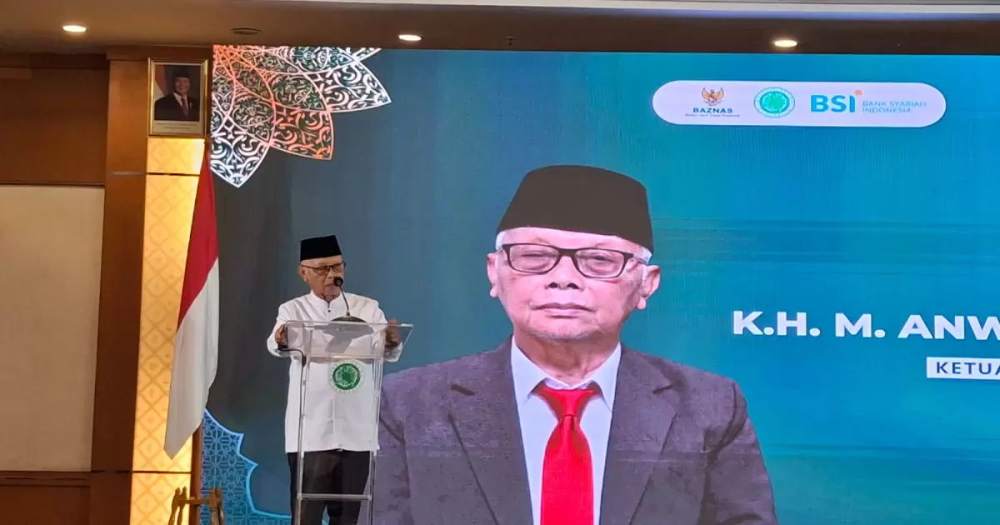

Ketua Umum Majelis Ulama Indonesia (MUI), KH Muhammad Anwar Iskandar, mengkritik kondisi penegakan hukum di Indonesia yang dinilai terlalu berorientasi pada aspek formal dan prosedural, namun belum sepenuhnya menghadirkan keadilan yang sesungguhnya. Menurutnya, hukum tidak boleh berhenti pada penerapan aturan tertulis semata, melainkan harus mampu mewujudkan rasa keadilan bagi masyarakat.
Pernyataan tersebut disampaikan dalam Mudzakarah Hukum Nasional yang diselenggarakan oleh Komisi Hukum MUI di Jakarta. Kegiatan tersebut mengangkat tema penguatan sinergi antara MUI dan aparat penegak hukum dalam memberikan advokasi serta perlindungan hukum bagi kelompok dhuafa dan masyarakat miskin.
KH Anwar Iskandar menyoroti bahwa aturan hukum yang dibuat manusia selalu memiliki kemungkinan untuk dimanipulasi apabila para penegak hukum tidak memiliki integritas moral. Menurutnya, secanggih apa pun regulasi yang disusun, hukum tetap dapat disalahgunakan apabila dijalankan oleh orang-orang yang tidak jujur dan tidak bertanggung jawab.
Ia juga menyinggung bahwa di Indonesia terdapat Kementerian Hukum, bukan Kementerian Keadilan, sebagai ilustrasi bahwa orientasi penegakan hukum sering kali lebih menitikberatkan pada kepatuhan terhadap aturan dibandingkan pencapaian keadilan. Menurutnya, tujuan akhir dari seluruh proses hukum seharusnya adalah keadilan, sehingga hukum kehilangan makna apabila tidak mampu mewujudkannya.
Lebih lanjut, Ketua Umum MUI menegaskan bahwa pengawasan formal melalui berbagai peraturan belum cukup untuk menjamin integritas aparat penegak hukum. Ia berpendapat bahwa pengawasan yang paling efektif berasal dari hati nurani, ketakwaan kepada Tuhan, dan kesadaran moral setiap individu. Nilai-nilai tersebut dinilai menjadi fondasi utama agar hakim, jaksa, polisi, maupun advokat menjalankan tugas secara jujur dan tidak menyalahgunakan kewenangannya.
Menurutnya, apabila para penegak hukum memiliki rasa takut kepada Tuhan dan menjunjung tinggi moralitas, mereka tidak akan mempermainkan hukum ataupun mengorbankan hak-hak masyarakat, khususnya kelompok dhuafa yang memiliki keterbatasan akses terhadap keadilan. Oleh karena itu, pembentukan karakter dan integritas harus menjadi perhatian utama dalam pendidikan calon penegak hukum.
Sebagai penutup, KH Anwar Iskandar mengajak Komisi Hukum MUI, perguruan tinggi, serta pondok pesantren untuk berperan aktif mencetak generasi penegak hukum yang tidak hanya menguasai ilmu hukum, tetapi juga memiliki akhlak, integritas, dan tanggung jawab moral yang tinggi. Dengan demikian, penegakan hukum di Indonesia diharapkan tidak hanya berlandaskan kepastian hukum, tetapi juga benar-benar menghadirkan keadilan bagi seluruh lapisan masyarakat.